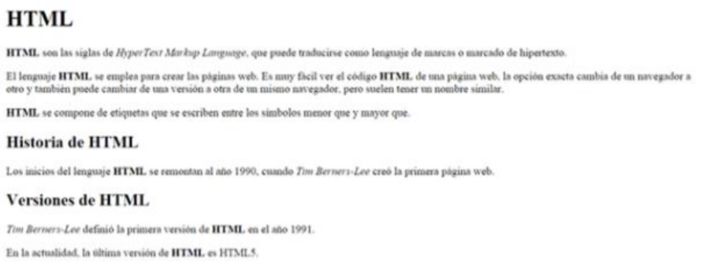

En el código base que se te proporciona debes realizar los siguientes cambios:
El resultado final debe ser una página web que tenga el mismo aspecto que la siguiente imagen:
HTML son las siglas de HyperText Markup Language, que puede traducirse como lenguaje de marcas o marcado de hipertexto.
El lenguaje HTML, se emplea para crear las páginas web. Es muy fácil ver el código HTML de una página web, la opción exacta cambia de un navegador a otro y también puede cambiar de una versión a otra de un mismo navegador, pero suelen tener un nombre similar.
HTML se compone de etiquetas que se escriben entre los símbolos menor que y mayor que.
Los inicios del lenguaje HTML se remontan al año 1990, cuando Tim Berners-Lee creó la primera página web.
Tim Berners-Lee definió la primera versión de HTML en el año 1991.
En la actualidad, la última versión de HTML es HTML5.